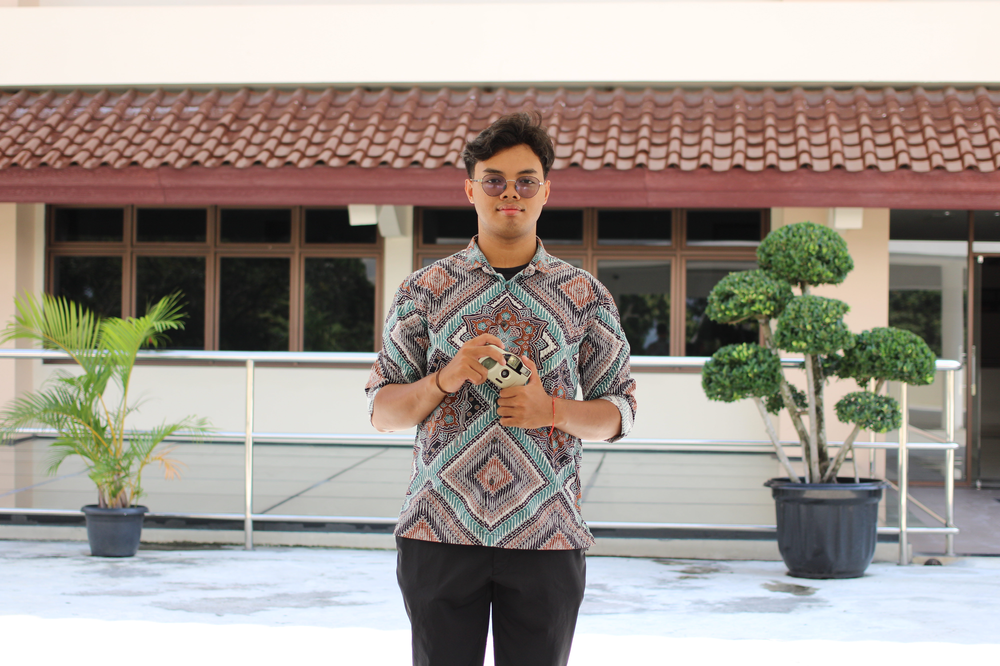

Profil

Halo, saya Andreas Bima. Saya merupakan mahasiswa Sanata Dharma Program Studi Informatika yang memiliki ketertarikan pada bidang teknologi dan pemrograman. Saya juga memliki ketertarikan dengan bermain alat musik dan dalam dunia fotografi.
Data Pribadi
| Nama | Andreas Bima |
| Program Studi | Informatika |
| Universitas | Universitas Sanata Dharma |
| andreasbima2413@gmail.com | |
| No telp | 0878-3338-5503 |
| bima_withcamera |
Hobi
- Drumer
- Fotografer
- Editor
- Bermain badminton
Analisis SWOT
Strengths (Kekuatan)
- Memiliki kemampuan untuk mudah beradaptasi pada lingkungan baru.
- Memiliki perasaan yang selalu penasaran akan pengalaman baru.
- Berani bertanggung jawab atas apa yang dilakukan.
- Memiliki sifat yang mudah untuk berkerja sama.
- Senang akan membantu Orang yang sedang kesusahan.
- Senang dengan memperhatikan hal-hal yang kecil.
Weaknesses (Kelemahan)
- Saya adalah orang yang mudah emosi dan lambat bergerak saat merasa mengantuk atau lelah.
Opportunities (Peluang)
- Memiliki kesempatan untuk mengembangkan kemampuan di bidang teknologi.
- Dapat mengembangkan kemampuan fotografi dan editing menjadi pengalaman profesional.
- Dapat mengikuti berbagai proyek dan kegiatan untuk menambah pengalaman.
Threats (Ancaman)
- Perkembangan teknologi yang cepat sehingga harus terus belajar.
- Persaingan di bidang teknologi dan kreatif yang semakin tinggi.
- Perubahan teknologi dapat membuat kemampuan yang dimiliki perlu terus diperbarui.